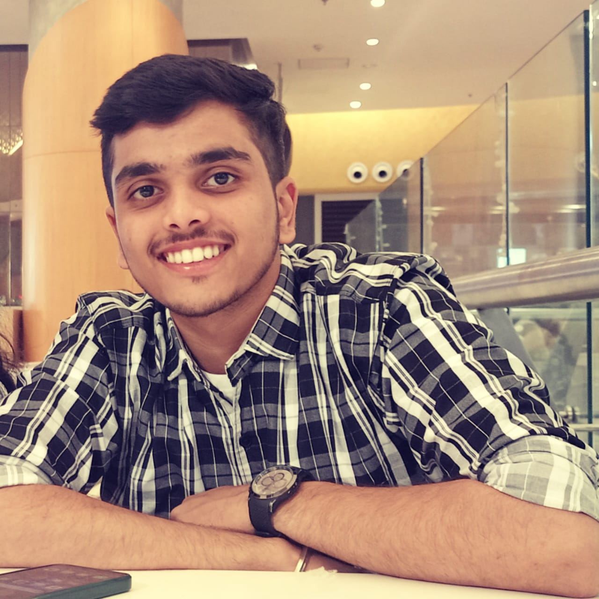

Hello I'm
Welcome to my website

About Me
Front web developer
Ux ui designer
Iot developer
Hello there! I'm a passionate student delving into the realms of web development, competitive programming, and design. With a fervent curiosity and
an insatiable appetite for learning, I thrive in the dynamic world of technology. My journey encompasses a blend of creativity and logical problem-solving,
as I immerse myself in crafting intuitive web experiences, honing my coding skills to tackle challenging algorithms, and exploring the aesthetics of design. I'm driven by a relentless pursuit of excellence and a commitment to pushing boundaries in every project I undertake. Let's innovate, create, and make an impact together in the digital landscape!